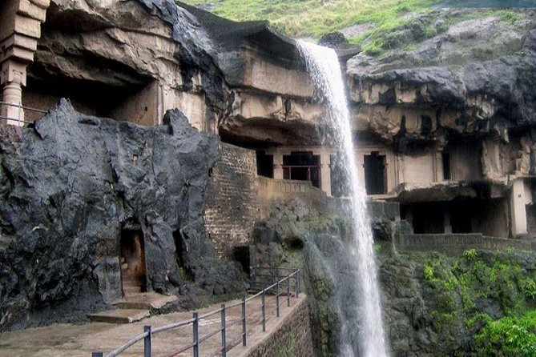
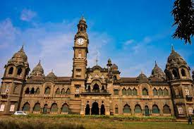

best district for travel
best places for travel

Bombay
Formerly known as Bombay, Mumbai is the largest city and the capital of Maharashtra. It is also the most populated city in India and the 5th most populous city in the world. The city that we see today is a collection of 7 islands which were joined into a single metropolitan through land reclamation techniques in the 18th century under the rule of the British East India Company.

Aurangabad
Aurangabad is named after the Mughal emperor Aurangzeb and is one of the most prominent tourist places in Maharashtra. The city is famous for its historical monuments and the ancient caves of Ajanta and Ellora which are a national heritage site.

Kolhapur
The city of Kolhapur is located at the banks of the Panchganga River and one of the Princely states of the Marathas. The city is considered to be the heart of the Maratha Empire and is famous for its various historical monuments and cultural heritage of the Marathi people.